Toda tu reunión en pantalla, gratis.
Canciones, Biblia, himnarios y presentaciones en el proyector y en vivo por YouTube, desde un solo programa. Lo preparás en espera y lo mostrás con un clic. Para iglesias, congregaciones y eventos.
Descarga directa: Windows · Mac · Linux
- Gratis para siempre
- Sin cuentas ni internet
- Código abierto
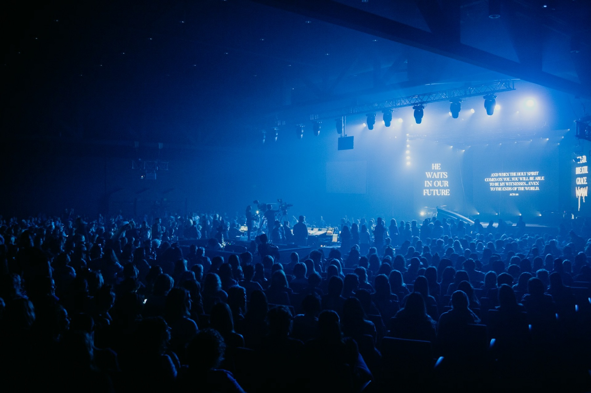
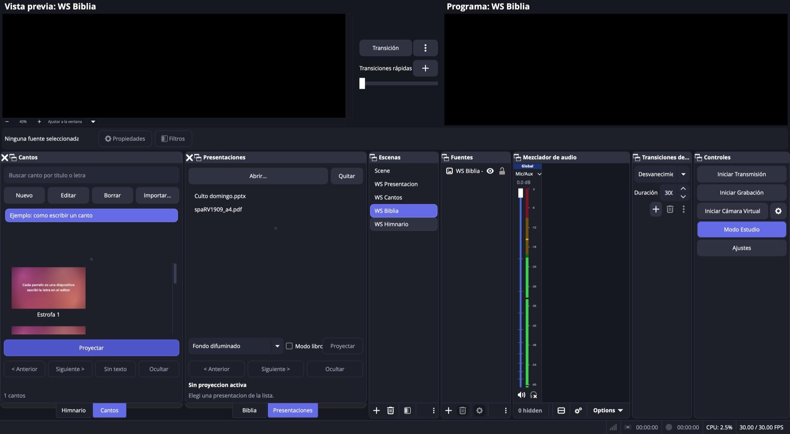
- Cualquier proyector o TV
- YouTube y Facebook Live
- Presentadores inalámbricos
- Stream Deck
- macOS · Windows · Linux
Funciones
Todo lo que pasa en la pantalla, en un lugar.
Elegí lo que necesitás hoy.
Escribí la letra una vez. Proyectala siempre.
Pegás la canción y cada párrafo queda como una diapositiva. En vivo saltás al coro con la tecla C y al puente con la P.
- Fondos por canción o por diapositiva, incluso video
- Importa desde OpenLP, OpenSong y ChordPro
- Himnarios con la pista cantada o instrumental sincronizada
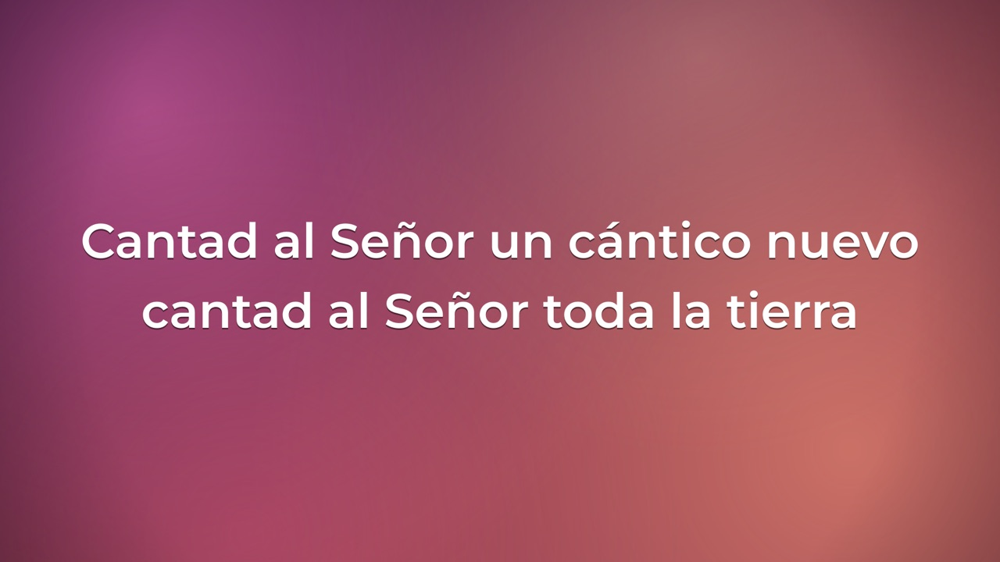
Escribí “sal 23” y listo.
Encontrás el pasaje por cita o por frase. Se proyecta con la referencia grande y la versión discreta debajo, legible desde la última fila.
- Seis versiones libres incluidas y otras para importar
- 17 tipografías y 18 fondos pensados para proyectar
- Pantalla completa o en la parte de abajo, sobre la cámara
Arrastrá el archivo. Nada de exportar imágenes.
PowerPoint, Keynote y PDF se proyectan diapositiva por diapositiva. El modo libro divide las páginas verticales para que el texto se lea grande.
- Funciona con el presentador inalámbrico del orador
- Tecla B para dejar la pantalla en negro
- Carpetas de fotos como presentación
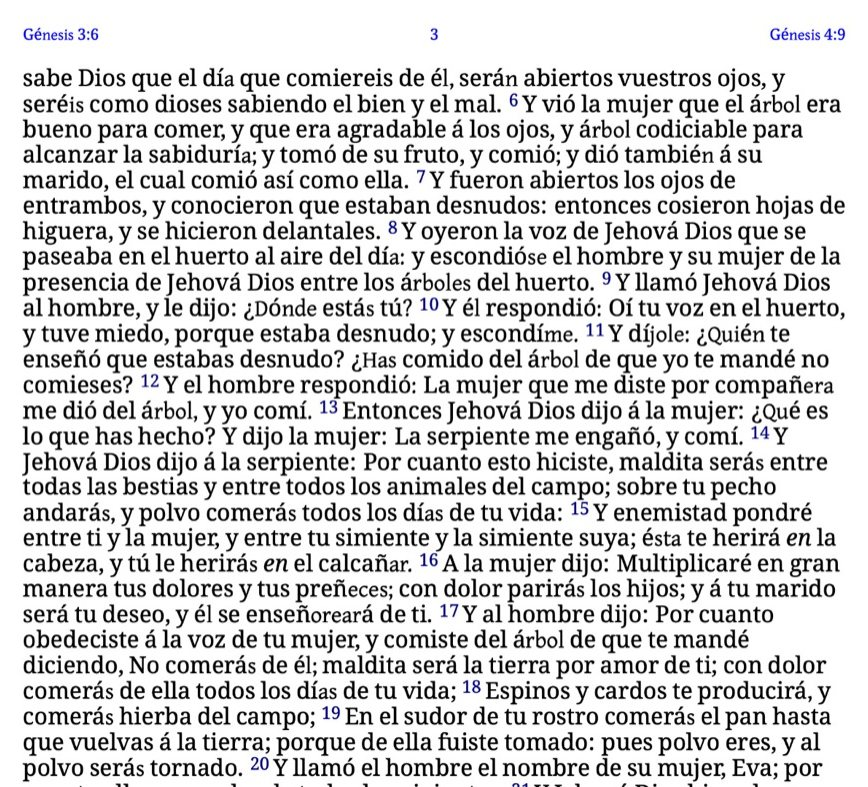
Lo preparás en espera. Lo mostrás con un botón.
Lo que elegís aparece primero EN ESPERA, donde nadie lo ve. Cuando está listo, apretás “Pasar a pantalla”. El orden de la reunión deja todo preparado de antemano.
- Monitor para quien canta o predica: actual, siguiente y reloj
- Rótulos de nombre y avisos urgentes encima de todo
- Transmisión y grabación incluidas, sin capturar ventanas
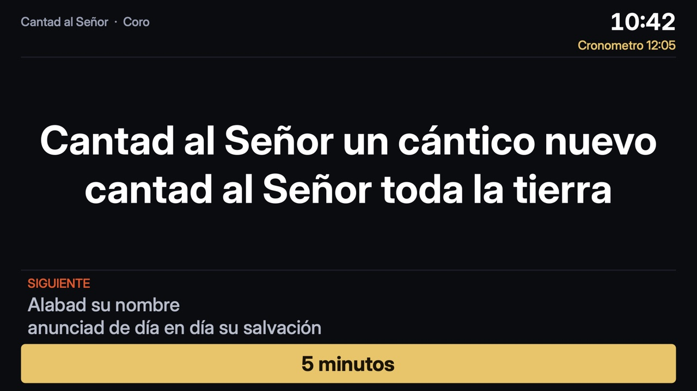
Manejá toda la reunión desde tu teléfono.
Escaneás un código QR y cualquier celular de la misma red se vuelve un control remoto completo. Sin instalar apps y con un código de acceso.
- Pasar diapositivas, ocultar la pantalla y “Pasar a pantalla”
- Cambiar de escena y mostrar u ocultar cámaras, logos y audio
- Mostrar un himno, un pasaje o un canto, transmitir y grabar
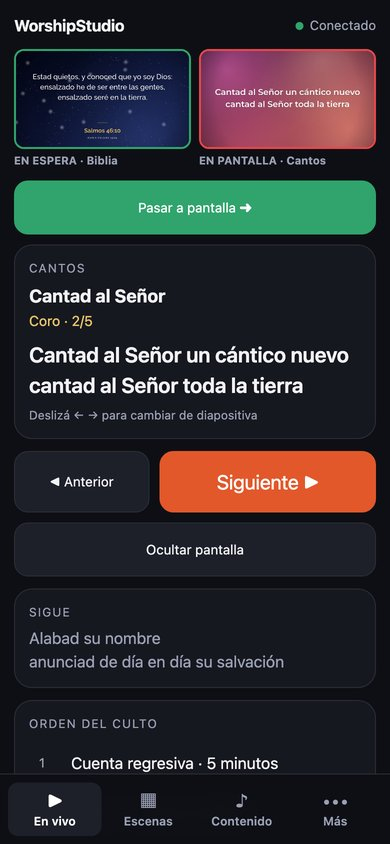
Canciones y coros
Biblioteca con buscador por título o letra.
Más de 1.500 Biblias
Gratis, en cientos de idiomas. Por cita o frase.
PowerPoint y PDF
Sin exportar, con modo libro.
Transmisión
YouTube, Facebook y grabación en el mismo programa.
Orden de la reunión
Todo preparado, un botón para avanzar.
Control desde el celular
Escenas, fuentes, contenido y transmisión, con código QR.
Fondos propios
Fotos y videos incluidos, o subí los de tu iglesia.
Avisos y cuenta regresiva
Nombres, mensajes urgentes y reloj de inicio.
Para quién
Si tu comunidad se reúne, sirve.
De una reunión de cincuenta personas a un congreso de miles.
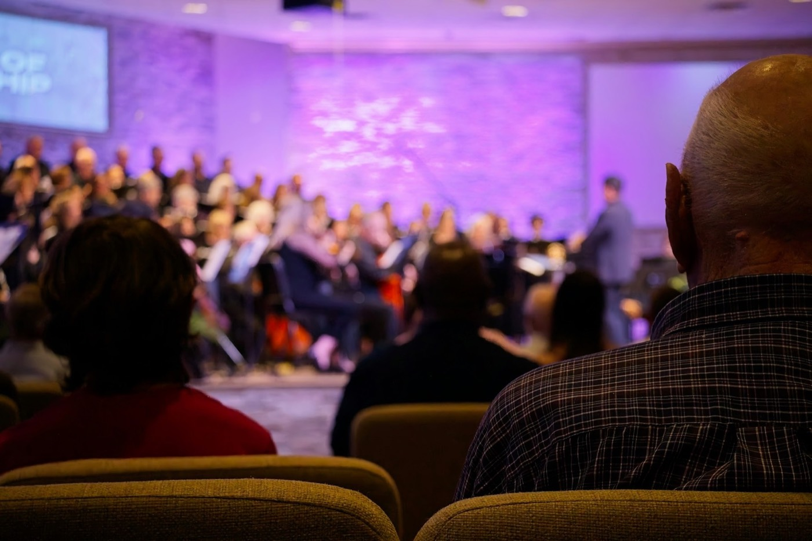
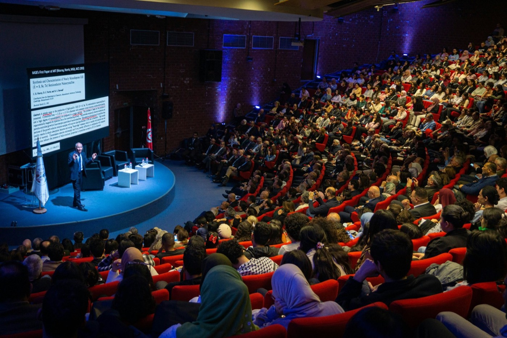
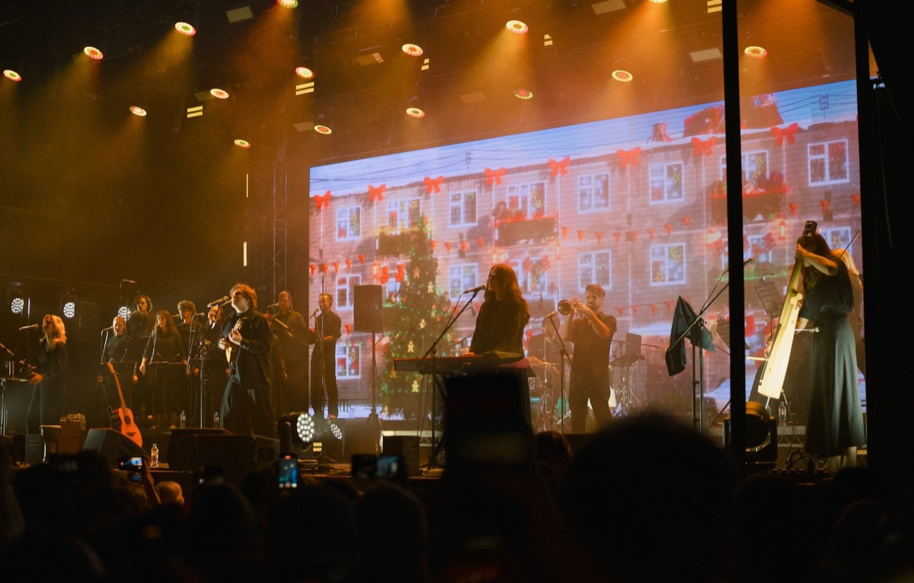
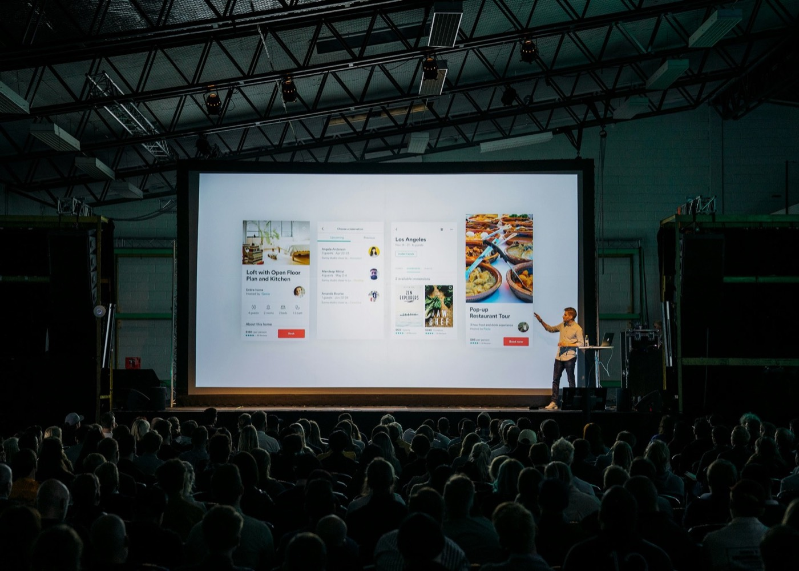
Comparar
Uno hace el trabajo de dos.
Cómo empezar
Tu primera reunión en diez minutos.
- 1
Descargá e instalá
Un archivo, sin crear cuentas.
- 2
Elegí qué mostrar
Una canción, un pasaje o el PowerPoint del orador.
- 3
Pasalo a pantalla
Un clic y lo ve la sala; si querés, también YouTube.
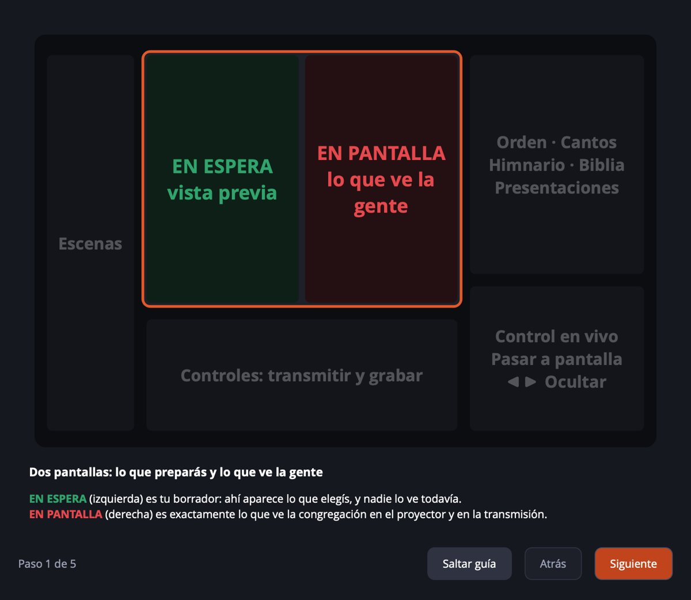
La primera vez, te guía paso a paso.
Al abrirlo, una guía corta te muestra qué hace cada parte de la ventana y te ayuda a conectar el proyector. En pocos minutos estás proyectando.
Descargar
Gratis. Para siempre.
Sin versión paga, sin publicidad y sin límites.
¿Aparece una advertencia la primera vez?
Mac: clic derecho sobre WorshipStudio → Abrir → Abrir. Windows: descomprimí el zip, abrí bin\64bit\WorshipStudio.exe y, si aparece “Windows protegió su PC”, tocá “Más información” → “Ejecutar de todas formas”. Linux: descomprimí y abrí worshipstudio.sh. Pasa porque todavía no tiene los certificados de Apple y Microsoft, que las donaciones ayudan a pagar.
Código abierto
Abierto y transparente, a la vista de todos.
El código es abierto (GPL-2.0): cualquiera puede revisarlo y mejorarlo. La app no envía datos ni pide cuentas, y tus canciones son archivos tuyos.
Donar
Gratis para todos. Sostenido por quienes pueden.
Tu aporte paga los certificados para que se instale sin advertencias, el instalador de Windows y los tutoriales.
Preguntas
Lo que más nos preguntan.
¿Es gratis de verdad?
Sí. Es software libre bajo licencia GPL: sin versión paga, sin límites y sin marcas de agua.
¿Sirve para mi congregación?
Sirve para cualquier comunidad que cante, lea o presente en una pantalla: iglesias de cualquier denominación, congregaciones, sinagogas, colegios y eventos.
¿Necesito internet?
No. Funciona sin conexión; solo hace falta internet para transmitir en vivo o para descargar más Biblias (una vez).
¿Qué Biblias trae? ¿Está la RV1960 o la NVI?
Trae seis versiones y desde la app descargás gratis más de 1.500 traducciones de uso libre en cientos de idiomas. La RV1960, la NVI, la NTV y los himnarios tienen derechos de autor: si tu comunidad tiene permiso, puede importarlos. Detalles en Licencias.
¿Puedo usar mis propios fondos?
Sí. Trae fondos incluidos y podés subir todas las imágenes y videos que quieras: quedan guardados en "Mis fondos" para cantos y Biblia.
Encontré un error o tengo una idea
¡Gracias! Escribinos a contact.worshipstudio@gmail.com o desde la app en Ayuda → Enviar comentarios.
¿Funciona en Windows y Linux?
Sí: hay descargas para macOS, Windows 10/11 y Ubuntu. La versión de Windows es nueva; si algo falla, contanos en GitHub.
¿Puedo usarlo junto a otros programas?
Sí. WorshipStudio guarda su configuración aparte y no toca la de otros programas que tengas instalados.
Descargá WorshipStudio. Es gratis.
Canciones, Biblia, presentaciones y transmisión, listos para tu próxima reunión.
Descargar gratis